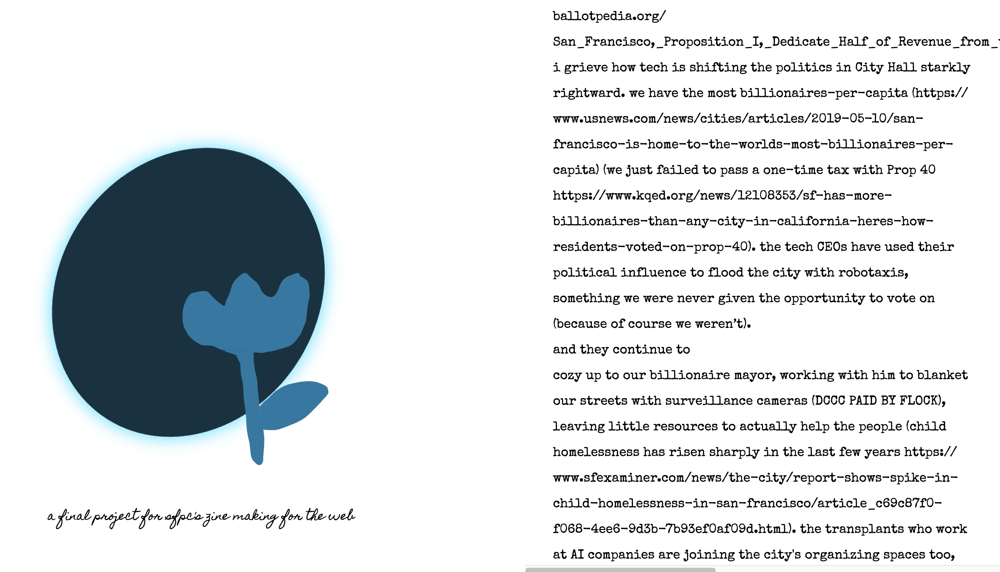

↫ read the zine.
the process
Technical prototype

The first technical prototype added an animated glow to elements
based on scroll position.
- General positioning and format
- Dynamic styles that changed during scrolling
- Layered images
- Annotations with text and link content
Print exploration
Started by carving lino blocks, printing them in black (the only ink i
had), then scanning them into the computer
Tried out
-
Using PNGs, which will need image editing to change the colors
-
Using SVGs, which allow for dynamic styling and other fun things
Both options change the look of the prints at least a little